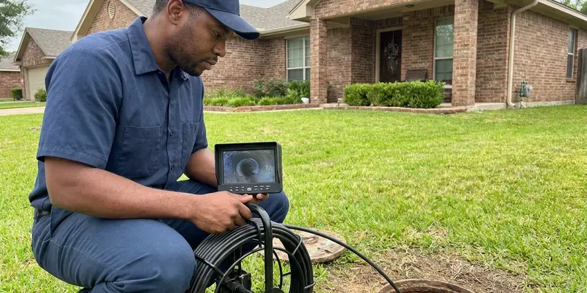

Repipe Specialists in Lakewood, CO
For trusted repipe specialists in Lakewood, CO, look no further than GFR Plumbing. We handle everything from initial assessment to final installation.
- Long-Lasting Pipe Materials
- Code-Compliant Work
- Fast, Free Estimates
- Experienced Plumbing Crews

Ready for New Pipes? Get a Repipe Quote in Lakewood, CO.
Don't wait for a plumbing emergency, protect your home's future with a full repipe.
Whole-Home Repipe Specialists Working in Lakewood, CO
GFR Plumbing is your top choice for complete repiping services in Lakewood, CO. We understand the challenges homes face, from mineral-heavy water to shifting ground, which can speed up pipe wear. Mountain homes in Colorado frequently rely on private wells, which may need treatment for iron, manganese, or other minerals. Our team specializes in replacing old, corroded, or damaged plumbing systems with new, high-performance materials.
Our expertise includes:
- Copper and PEX piping installation
- Whole-home PEX and copper repiping experience.
- Adherence to all Colorado plumbing codes and local Lakewood regulations.

Additional Plumbing Maintenance Services in Lakewood, CO
Our maintenance and specialty plumbing services in Lakewood, CO protect your home year-round and extend the life of every system.


Customers
Why Choose GFR Plumbing for Repipe Specialists in Lakewood, CO?
Choosing the right repiping contractor prevents future headaches and preserves your home's value. Our specialized knowledge of Colorado plumbing systems makes us the right partner.
- Colorado Experience, We know how local climate and soil conditions affect your plumbing, leading to slab leaks and pipe corrosion.
- Local Knowledge, We understand Colorado plumbing codes and environmental factors that affect pipe lifespan.
- Slab Leak Solution, Overhead rerouting removes under-slab supply lines and the leaks they cause.
Citywide Coverage
We repipe homes in every neighborhood of Lakewood, from 1970s ranch houses to two-story homes built in the 2000s. Our crews work in single-story and multi-story homes, condos and townhouses.
Experienced Team
Our repipe specialists at GFR Plumbing are highly trained and experienced in whole-home plumbing replacements. They understand the details of working within existing structures, minimizing disruption while maximizing the efficiency and quality of the new plumbing system.
Safety-First Approach
Safety is our top priority in every repiping project we undertake. Our repipe specialists closely follow all local Colorado plumbing codes and safety regulations, protecting your home and family.
Trusted Certified Lakewood Plumbing Services Professionals
At GFR Plumbing, we take pride in providing certified plumbing services throughout Lakewood, CO. Backed by leading industry credentials, our experienced plumbers combine technical skill with genuine customer care. Whether it is repair, installation, or maintenance, we follow strict safety and quality standards to deliver long-lasting results you can trust.
Call Us Now PHCC Plumbing Contractor Recognition
PHCC Plumbing Contractor Recognition Better Business Bureau (BBB) Accreditation
Better Business Bureau (BBB) Accreditation Angi Certified Pro
Angi Certified Pro ISO 9001 Quality Management Certification
ISO 9001 Quality Management CertificationReliable Repipe Specialists Services in Lakewood, CO
Emergency Repipe Services in Lakewood, CO
Sometimes a pipe burst or widespread failure calls for an immediate repipe. GFR Plumbing offers emergency repipe services for critical situations in Lakewood, CO. While a full repipe is a major project, our team can quickly assess the damage and provide temporary solutions while planning the full replacement. We work efficiently to restore your plumbing system and minimize disruption during an unexpected crisis, ensuring your home safe and functional.

Repipe Costs Versus Leak Repairs in Lakewood, CO
A whole-home PEX repipe for an average home often runs $5,000 to $12,000, with copper usually costing more. A single slab leak repair can run $1,000 to $4,000 including access and restoration. After two or three leaks, a repipe often pays for itself. We give you a side-by-side comparison so you can decide.
Drain Line Repiping in Lakewood
While often overlooked, your home's drain lines are just as crucial as your supply lines. Old cast iron or corroded drain pipes can lead to frequent clogs, slow drainage, and even sewage backups. GFR Plumbing provides complete drain line repiping in Lakewood, replacing failing waste pipes with new, smooth PVC or ABS lines. This ensures efficient waste removal and prevents future drainage problems, protecting your home from foul odors and unsanitary conditions.
Efficient PEX Repiping in Lakewood, CO
PEX (cross-linked polyethylene) is a flexible, cost-effective, and very popular choice for repiping projects in Lakewood, CO. Its flexibility allows for fewer connections, reducing potential leak points and making installation quicker and less intrusive than traditional rigid pipes. PEX is also very resistant to freezing, scaling, and chlorine, common issues in many water systems. We use high-quality PEX-A or PEX-B tubing, installed with durable crimp or expansion fittings, to create a dependable and efficient plumbing network throughout your home.
Cost-Effective Repiping Comparisons in Lakewood, CO
Understanding the cost of repiping is crucial for homeowners in Lakewood, CO. We provide clear comparisons between PEX and copper repiping options, detailing material costs, labor, and expected lifespan. PEX is generally more affordable for materials and installation, while copper offers a premium, long-lasting solution with excellent resale value. Our estimates include all necessary permits, fittings, and cleanup, ensuring you have a clear picture of your investment before any work begins, with no hidden fees.
PEX Pipe Replacement in Lakewood, CO
PEX (cross-linked polyethylene) is a flexible, cost-effective, and highly durable piping material that's gaining popularity for repiping projects. GFR Plumbing specializes in PEX pipe replacement in Lakewood, CO, offering a system that resists freezing, corrosion, and scale buildup. Its flexibility allows for fewer connections, reducing potential leak points. PEX also noticeably dampens water hammer noise, providing a quieter plumbing system for your home.
PEX-A Whole-Home Repiping in Lakewood
PEX-A tubing is flexible, resists scale buildup and handles thermal expansion well, which suits hard water. We use Uponor or similar PEX-A with cold expansion fittings that open up the full pipe diameter. Long continuous runs mean fewer joints in walls and attics. Most homes are repiped with PEX in two to four days.

Kitec and Polybutylene Replacement in Lakewood
Kitec, with its orange or blue PEX-AL-PEX pipe and brass fittings, and gray polybutylene pipe are both known for failures. Many homes built in the 1980s through early 2000s contain one or the other. We replace these systems completely so your home is easier to insure and sell later. Visible pipe at the water heater often tells us what you have.
Repipe Specialists Near Me in Lakewood, CO
Homeowners looking for repipe specialists near me can count on GFR Plumbing for free on-site estimates in Lakewood. We inspect your current pipes, attic access and fixture locations. Then we give you a firm written price.
Our crews know the home styles and pipe materials common in Lakewood. That experience helps us plan efficient routes and fewer wall openings. You get a faster repipe with less mess.
GFR Plumbing at a Glance
- Licensed and insured plumbers serving Lakewood, CO
- Same-day appointments and 24/7 emergency response
- Clear written estimates, no hidden fees
- 4.8-star rated by 750+ Colorado customers
Lakewood Map
Lakewood Information
- Population
- 155,961
- Area codes
- 303/720/970
- Service area
- Lakewood and communities within 40 miles
- Nearby
- Arvada, Westminster, Denver, Highlands Ranch
Aging pipe, mineral buildup and repeated pinhole leaks make whole-home repiping one of the most worthwhile long-term upgrades for homes in Lakewood, CO.
Expert Services
Trust our professionals for reliable GFR Plumbing solutions in Lakewood, CO.
Our Specialized Plumbing Services in Lakewood, CO
At GFR Plumbing, we provide a complete range of plumbing services across Lakewood, CO. From leak detection to full system installations, our team ensures fast, precise, and affordable service for both residential and commercial properties. Explore our core services below:


How Our Repipe Specialists Process Works in Lakewood, CO
Here is how we repipe your home efficiently, cleanly and to code.
Request a Quote
Start by calling (720) 727-9398 to schedule a free, no-obligation consultation at your Lakewood home. Our repipe specialist will visit to assess your current plumbing system and talk through your needs.
Detailed Inspection
We conduct a thorough inspection of your existing pipes, identifying problem areas, material types, and potential challenges. We'll then provide a detailed estimate outlining material options like PEX or copper, scope of work, and the project timeline.
Professional Installation
Our licensed plumbers meticulously remove old piping and install your new plumbing system, following all Colorado and local Lakewood codes. We work efficiently, minimizing disruption, and confirm proper functionality and water pressure.
Frequently Asked Questions About Repipe Specialists in Lakewood
The cost of a whole-home repipe in Lakewood, CO can vary significantly depending on the size of your home, the number of fixtures, and the chosen piping material, such as copper or PEX. Generally, you can expect to pay anywhere from $4,000 to $15,000 or more. We provide a detailed, upfront quote after a careful assessment of your specific home and needs.
Mountain homes in Colorado frequently rely on private wells, which may need treatment for iron, manganese, or natural minerals. Hard water can lead to mineral buildup, or scale, inside pipes over time. This buildup restricts water flow, reduces pressure, and can accelerate corrosion, especially in older metal pipes. Repiping with materials like PEX or properly installed copper, along with considering a water softener, can mitigate these effects and extend the life of your plumbing system.
In most cases, yes, you can stay in your home during the repiping process. Our team works to limit disruption and will typically make sure you have water service at the end of each day. We take care to protect your property and keep the work area clean and safe throughout the job.
While it's possible to repipe only a section of your home, we often recommend a whole-home repipe if your entire system is aging or made of problematic materials. Sectional repiping can be a temporary fix if other parts of your plumbing are still vulnerable. Our specialists can assess your situation and advise on the most cost-effective and long-term solution for your Lakewood home.
GFR Plumbing stands behind our repiping work with comprehensive warranties covering both labor and materials. The specific terms of your warranty will be provided in your detailed estimate. We use high-quality materials from trusted brands like Uponor PEX and Mueller Streamline copper, ensuring long-term reliability for your new plumbing system in Lakewood, CO.
Yes, whole-home repipes require a permit and inspection in most Colorado jurisdictions. We pull the permit and book inspections.
No, most families stay in the home. We plan water shutoffs during the day and restore service each evening.
While fixing individual leaks might seem cheaper in the short term, it's often a temporary solution for an aging plumbing system. If you're experiencing multiple leaks, low pressure, or discolored water, it indicates widespread pipe wear. Repiping addresses the root cause by replacing the entire system, providing a long-term, reliable solution and preventing future problems.
What People Are Saying About Our Plumbing Experts?

Laura S.
I scheduled a water heater replacement, and the team made the process smooth and affordable. The new unit works perfectly, and they cleaned up after completing the job.
Water Heater Replacement · Arvada, CO
Patricia H.
We had a slab leak that two other companies could not find. GFR Plumbing located it in under an hour, explained our options, and the price matched the quote to the dollar.
Slab Leak Repair · Lakewood, CO
James P.
Our commercial plumbing system had a leak under the sink, and GFR Plumbing handled it professionally. The plumbers arrived quickly and restored everything without disruption to our customers.
Commercial Plumbing · Lakewood, CO
Emily R.
I called GFR Plumbing for plumbing repair, and the technician was fast, polite, and thorough. They explained the problem clearly and fixed it the same day. I will definitely hire them again. Highly recommended!
Plumbing Repair · Centennial, COSofia M.
Two new toilets installed in one visit, no mess left behind, and the tech even adjusted a faucet he noticed was dripping. Fair pricing and really friendly.
Toilet Installation · Centennial, CO
Daniel K.
A pipe burst at 11 pm and they actually answered. The plumber showed up within the hour, shut everything down, and had us back to normal the next morning. Could not ask for more.
Emergency Plumbing · Thornton, CO